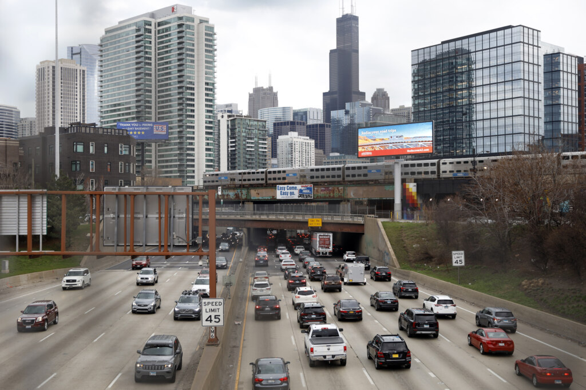

Getting Around Illinois
Highways and Roads
Illinois is a major transportation hub, with an extensive network of highways and interstates. Key routes include I-55, I-57, I-80, I-90, and I-94, connecting cities like Chicago, Springfield, Peoria, and beyond. Historic Route 66 also runs through Illinois, offering a scenic drive with many attractions along the way. [1]
Rail Travel
Amtrak provides passenger rail service to many Illinois cities, including Chicago, Springfield, Champaign, and Carbondale. Chicago’s Union Station is a major rail hub for both Amtrak and Metra, the commuter rail system serving the Chicago metropolitan area. [2]

Public Transit
The Chicago Transit Authority (CTA) operates the “L” train and bus systems throughout Chicago. Other cities, such as Springfield and Peoria, have their own local bus services. Public transit is a convenient way to get around urban areas. [3]

Airports
Illinois is home to several major airports. Chicago O’Hare International Airport is one of the busiest in the world, while Chicago Midway, Springfield’s Abraham Lincoln Capital Airport, and others provide connections across the country and globe. [4]
Biking and Walking
Many Illinois cities offer bike lanes, trails, and pedestrian-friendly areas. The Lakefront Trail in Chicago and the Constitution Trail in Bloomington-Normal are popular for both recreation and commuting. [5]